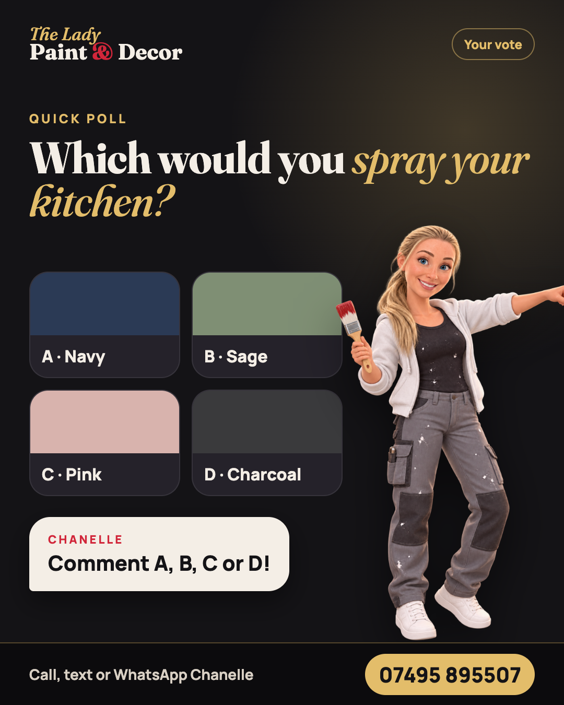
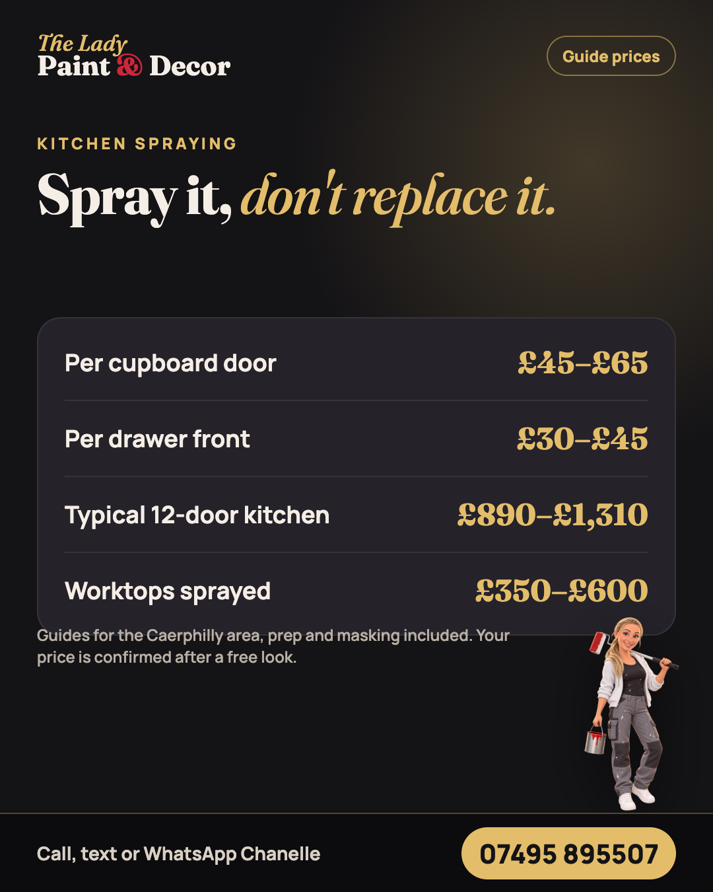
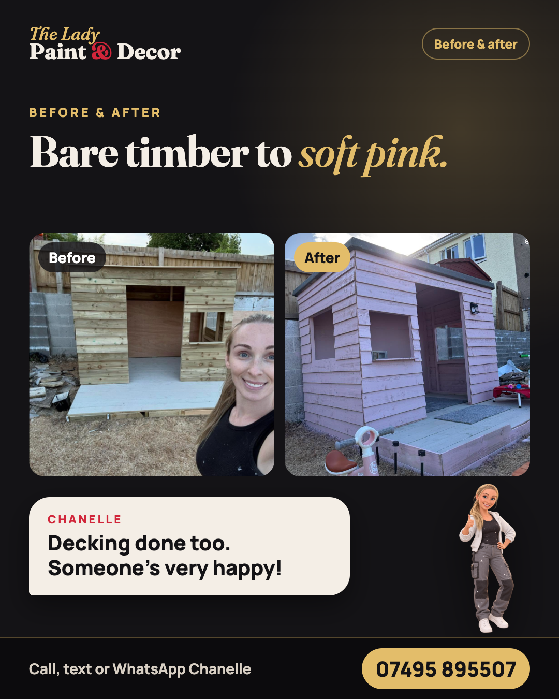

Bore da, pawb! 👋 I'm Chanelle, the lady behind The Lady Paint & Decor Company. I'm a trained and qualified painter, decorator and sprayer, with one fantastic helper. Kitchen unit spraying, granite-effect worktops, panelling, coving and wallpaper, all around Caerphilly. Now taking bookings for January. 📞 Call, text or WhatsApp Chanelle on 07495 895507. #Caerphilly #PainterAndDecorator #KitchenSpraying

Settle this for me 👇 If you were spraying your kitchen units tomorrow, which colour are you going for? A · Navy B · Sage C · Pink D · Charcoal Comment your letter. I'll tell you which one wins on Friday. 📞 Call, text or WhatsApp Chanelle on 07495 895507. #Caerphilly #KitchenSpraying #KitchenMakeover
This one made my week 🥹 "From the first conversation to the final walkthrough, the experience felt smooth and organised." Marry Kate, Google review That's exactly how it should feel. Thank you! 📞 Call, text or WhatsApp Chanelle on 07495 895507. #Caerphilly #PainterAndDecorator

How much does it cost to spray a kitchen? 💸 Guide prices for the Caerphilly area: • Per cupboard door: £45–£65 • Per drawer front: £30–£45 • A typical 12-door kitchen: £890–£1,310 • Worktops sprayed: £350–£600 A new fitted kitchen can be £8,000 to £15,000. Spraying gives you that new-kitchen feeling for a fraction of it. Your price is confirmed after a free look. 📞 Call, text or WhatsApp Chanelle on 07495 895507. #Caerphilly #KitchenSpraying #KitchenMakeover

From bare timber to soft pink 💗 This little playhouse got the full treatment, decking included. Little one is over the moon. Sheds, summerhouses, playhouses and fences: if it's wood, I can make it gorgeous. 📞 Call, text or WhatsApp Chanelle on 07495 895507. #Caerphilly #BeforeAndAfter #Playhouse
January is filling up 🗓️ If you fancy starting the year with a sprayed kitchen, fresh panelling or new coving, now's the time to grab a slot. Send me a photo of the room and I'll come back with a guide price. 📞 Call, text or WhatsApp Chanelle on 07495 895507. #Caerphilly #PainterAndDecorator #Panelling